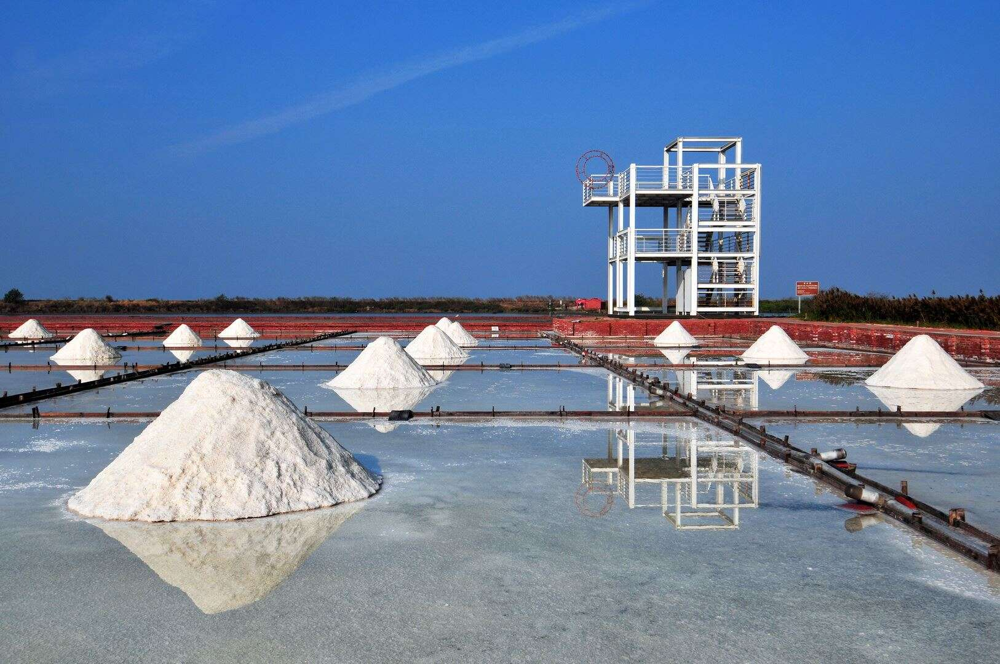
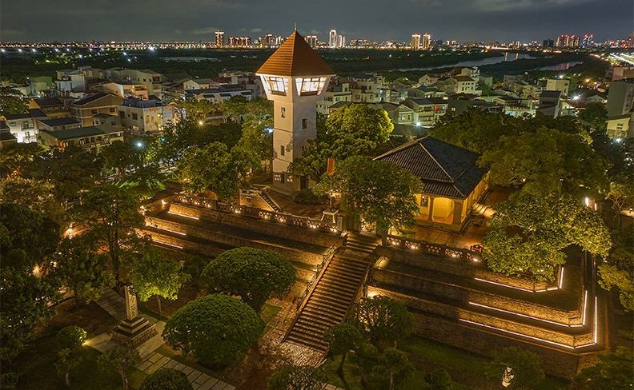

選擇活動地點

四草綠色隧道
四草綠色隧道在台江國家公園內，裡面有溼地及豐富的生態資源，可以坐船遊覽由紅樹林交織成的綠色隧道，潮間帶的招潮蟹、彈塗魚與紅樹林，體會不一樣的大自然感受。

井仔腳瓦盤鹽田
井仔腳瓦盤鹽田是北門的第一座鹽田，西元1818年開始曬鹽，因人工成本過高，在2002年停止曬鹽，鹽田漸漸荒廢，目前開發為觀光景點，遊客在此可體驗傳統曬鹽、挑鹽與收鹽。

赤崁樓
1653年當時進佔臺灣南部之荷人所建，「普羅民遮城」，與安平的「熱蘭遮城」遙遙相對，互為犄角。熱蘭遮城作為荷蘭總督統治中樞，普羅民遮城則作為行政及商業中心。

台南孔廟
「全臺首學」臺灣的第一座孔子廟，臺南孔子廟創建於明永曆19年（1665年），由島上第一個漢人政權鄭氏王朝所創立，為的是在臺開辦教育，培養為國效命的人才。

安平古堡
安平古堡位於台灣台南市，是台灣最具歷史意義的古蹟之一。安平古堡的前身是荷蘭人於 1624 年 建造的 熱蘭遮城，是台灣最早的城堡建築，見證了台灣400年來的歷史變遷。
奇美博物館
奇美博物館位於台南市仁德區，是台灣規模最大、館藏最豐富的私人博物館之一，，擁有豐富的藝術、樂器、兵器和動物標本等收藏，是台灣的重要文化地標之一。